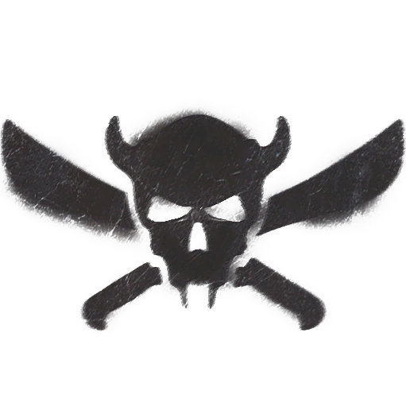
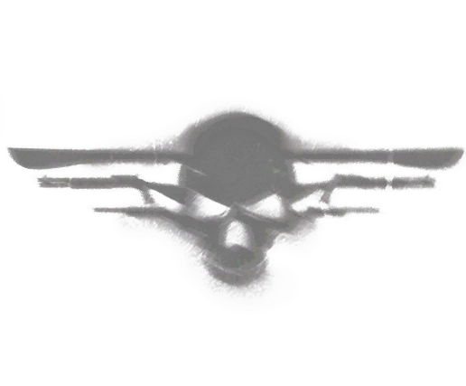
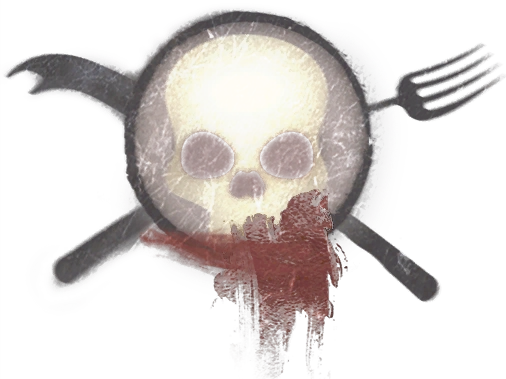

Raiders (レイダー / Fallout 76)
利己的。
血に飢えている。
爆弾が落ちたその日から、レイダーはウェイストランドの災厄であり続けている。
アパラチアにおいて、ローズは彼らの謎めいたリーダーだ。
しかし彼女は何者なのか？ そして世界の頂上にある彼女の止まり木から虐殺を眺めながら、彼女は何を得ることを望んでいるのか？」
―― @Fallout
アパラチアの元祖レイダーたちは、ウェストバージニア全土から集まった冷酷な略奪者と盗賊の同盟でした。
彼らは元々、カットスロート、ダイハード、ブラックウォーター盗賊団、グルマンズ、トラッパーの5つのギャングで構成されていました。
2102年までに、この同盟はスコーチの脅威により解散しました。
ダイハードの生き残りのメンバーは、後にクレーター・レイダーと呼ばれる新しいレイダー集団を率いてアパラチアに戻ってきました。
他にもブラッド・イーグルやラスト・イーグルといった主要なレイダーギャングが結成されましたが、これらは以前のギャングとは関係がないとされています。

背景
アパラチアの初期のレイダーグループは、他の生存者を恐怖に陥れ、欲しいものを何でも奪う血に飢えたサイコパスたちでした。
彼らは熟練したスカベンジャーであり、旧世界の技術を回収することに関しては独創的でした。
彼らの残虐性と冷酷さは、彼らの出自に由来しています。
最も初期のレイダーグループは、最終戦争によって荒れた境域のスキーロッジに閉じ込められた裕福な観光客たちによって結成されました。
当初、富裕層とスタッフは理性的に対応し、政府軍による救助を待っていました。
しかし、1週間もしないうちにリゾートの物資は底をつき始めました。
彼らは定期的な配達に依存していたからです。
これに対応して、観光客たちは救助を待つ間、物資を集めるために回収隊を結成し始め、自分たちの持ち物をリゾートスタッフの管理下に置きました。
生存者たちは11月にチャールストンのレスポンダーと接触し、助けと物資を求めました。
しかし、難民の流入に圧倒されていた市の指導者たちは、彼らを追い返さざるを得ませんでした。
有意義な物資を集めることに失敗したことで、一般投票で選出された生存者のリーダー、ハーランド・マクリントックの力は弱まりました。
しかし、傲慢な富裕層を極悪非道なレイダーへと真に変貌させたのは、2078年の冬でした。
降雪と放射能によって閉じ込められ、食料物資はほぼ完全に枯渇するまで減少し、生存者たちは互いに争い始めました。
2078年8月にレスポンダーがようやく山への遠征隊を送ったとき、彼らは生存者の成れの果てを発見し、それは最終戦争直後の惨状を目撃した者たちでさえも恐怖させるものでした。
デビッド・ソープは、たとえ欲しいものを手に入れるために誰かを踏みつけにすることになっても、ハーランドにはできなかった前進する方法を提示しました。
マクリントック夫妻が、助けに来た2人の生存者を殺した罪で彼を裁判にかけ追放しようとしたとき、彼らはすでに敗北していました。
ハーランドを排除した後、ソープは人々を、力ずくで欲しいものを奪い、邪魔する者は誰でも殺す恐ろしい集団へと変えました。
彼のリーダーシップの下、レイダーたちは徐々にアパラチアで最大級の組織化された派閥へと成長しました。
彼らは5つのギャングに分裂しました：カットスロート、トラッパー、ダイハード、ブラックウォーター盗賊団、そしてグルマンズです。
レイダーたちは主に、荒れた境域を通過する無所属のトレーダーや旅行者を獲物とし、力ずくで入手できないアイテム（例えばアパラチアの
B.O.S.からのものなど）は慎重に盗み出しました。
2082年までに、彼らの散発的な衝突と森林地帯への生ぬるい拡大は、チャールストンのレスポンダーとの対立を引き起こしました。
カットスロートの副司令官であり、リーダーであるデビッド・ソープの恋人でもあったロザリン・ジェフリーズが、市の南での残忍な衝突で捕らえられたとき、レスポンダーの希望の星は消えかけました。
拘留され尋問を受けたジェフリーズはソープと連絡を取ることができず、死亡したと思われていました。
激怒したソープはサマーズビル・ダムへの攻撃を命じ、そこでブラックウォーター盗賊団が
B.O.S.
から盗んだミニ・ニュークを使用してダムを爆破し、クリスマスイブにチャールストンを洪水で沈めました。
そうすることで、彼は州議事堂の独房に閉じ込められていたロザリンも殺してしまいました。

オーダー・オブ・ミステリーとの戦争
ソープはレスポンダーに対して一時的な優位を得ましたが、そうすることでまだ良心の名残を持っていた多くのレイダーを遠ざけ、シャノン・リバーズ率いるオーダー・オブ・ミステリーの注意を引くことになりました。
リバーズは複数の拠点を築き、生徒たちに訓練を施しました。
戦争は長引きましたが、最終的にオーダー・オブ・ミステリーは内部からの裏切りによって壊滅しました。
オリビア・リバーズが母親とオーダーを裏切り、レイダーと手を組んだのです。
オリビアの提供した情報とサイフォン・ホロテープのおかげで、レイダーはオーダーに対して決定的優位に立ち、最終的に彼女たちを全滅させました。
しかし、オリビア自身も裏切られ、殺害されました。
興亡
一時、ソープの地位は盤石に見えましたが、エンクレイヴの陰謀が彼の没落のお膳立てをしました。
2087年までに、ハーパーズ・フェリーがスコーチビーストに陥落し、スコーチとアパラチアの B.O.S.
がアパラチア南部を遮断していたため、怪物たちは沼地地帯を通って荒れた境域に押し寄せ始めました。
世界の頂上が最初に姿を消しましたが、ソープは脅威を認識できず、寄生的な活動を続けるという致命的なミスを犯しました。
彼の最後の過ちは、2096年後半にハンク・マディガンを投獄し、スコーチ探知システムのアップリンクと引き換えにレスポンダーとフリーステイト
を脅迫しようとしたときでした。
彼はその過ちに対して究極の代償を払い、スコーチがついに荒れた境域
からレイダーを一掃したとき、彼自身もスコーチの一人となりました。
彼らはアパラチアの他のほとんどの派閥より長く生き残りましたが、それは虚しい勝利でした。
2097年の春、士気を失い分裂した残党は、避難所を求めてあらゆる方向に逃げました。

組織
元祖レイダーは、主にデビッド・ソープとの権力と影響力に基づいた緩やかな階層構造で組織されていました。
彼のリーダーシップ、カリスマ性、そして冷酷な狡猾さは、挑戦者を分断して征服し、レイダーの意図を前進させることを可能にしました。
- カットスロート:
プレザント・バレーにキャンプを張り、デビッド・ソープと彼のガールフレンドであるロザリン・ジェフリーズによって運営されていた最大のギャングです。
冷酷で狡猾な男であるソープは、シャレーの生存者たちが彼をリーダーに選んだ後、ハーランド・マクリントックを退け、彼らを強力な戦闘部隊に再編成しました。
- ダイハード:
最も攻撃的でないレイダーギャングであるダイハードは、北へ移動し、サニートップスキー場の複合施設を占拠しました。
他のレイダーが自分の思い通りにするために暴力を使ったのに対し、ダイハードは窃盗と脅迫を組み合わせてやっていこうとしました。
- ブラックウォーター盗賊団: フレディ・ラングに率いられたこのギャングは、ブラックウォーター鉱山を拠点としていました。
彼らは爆発物や重火器の使用に長けており、特に B.O.S. から武器を盗むことで知られていました。 - グルマンズ:
モリス・スティーブンスとその妻イーディに率いられたグルマンズは、ボルトン・グリーンズを拠点としていました。
彼らはカニバリズム（食人）を実践しており、他のギャングからも恐れられ、軽蔑されていました。
- トラッパー:
ウォルター・グリスウォルドに率いられたトラッパーは、罠や爆発物を使用することに特化していました。
彼らは他の生存者を捕らえたり、待ち伏せしたりすることを得意としていました。
メンバー & ロケーション
著名なメンバー:
デビッド・ソープ（リーダー）、ロザリン・ジェフリーズ（パートナー）、ローズ（ミス・ナニー）、マージー・マクリントック（ダイハード元リーダー）、ヴィンセント・フライド（ダイハード新リーダー）、フレディ・ラング（ブラックウォーター盗賊団）、モリス＆イーディ・スティーブンス（グルマンズ）など。
主なロケーション:
世界の頂上[本部]、弾薬保管庫、ベックリー、クリフウォッチ、クレバスダム、ザ・クロスカッター、フリークショー、ナイフエッジ、モノンガー鉱山、モノンガー発電所、ミドルマウンテン・キャビン、リッパー・アレイ、セネカ・ギャングのキャンプ、積載場など。
元祖アパラチアのレイダーは、単なる悪役集団ではなく、極限状態における人間の道徳の崩壊と生存本能の暴走を描いた悲劇的な存在です。
富裕層の転落: スキーリゾートの観光客という「持てる者」たちが、飢えと寒さによって最も野蛮な「奪う者」へと変貌していく過程は、文明の脆さを痛烈に風刺しています。
個性の強さ: 食人に走るグルマンズや、爆発物を愛するブラックウォーター盗賊団など、各ギャングが際立った特徴を持っており、彼らの残したホロテープやメモを通じてその狂気と人間臭さを追体験できる点が素晴らしいです。
スコーチという抗えない終焉: どれほど暴力を極めても、結局はアパラチア全土を覆うスコーチ病という災害の前には無力であり、最強のリーダーであったデビッド・ソープですら怪物に成り果ててしまった結末は、虚しさと恐怖を感じさせます。

This article was created by translating and editing レイダー / Fallout 76 from Nukapedia: The Fallout Wiki.
Licensed under the Creative Commons Attribution-Share Alike License (CC BY-SA 3.0).
コミュニティ維持のため、寄付を受け付けております。
> COMMENTS